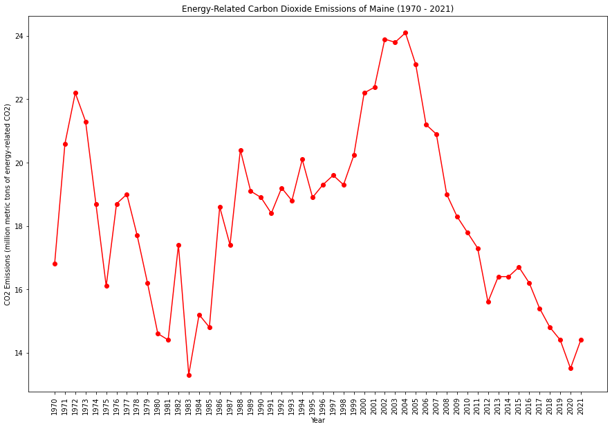
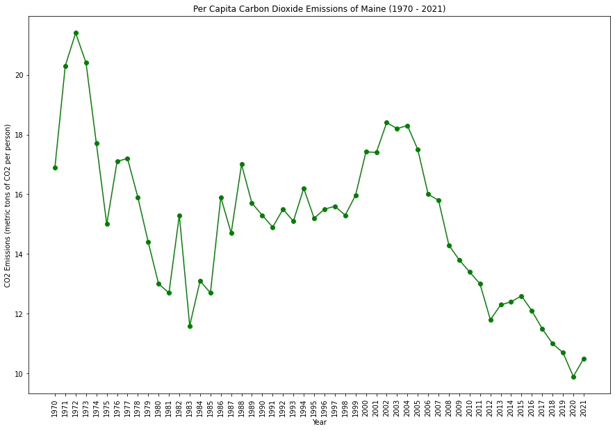
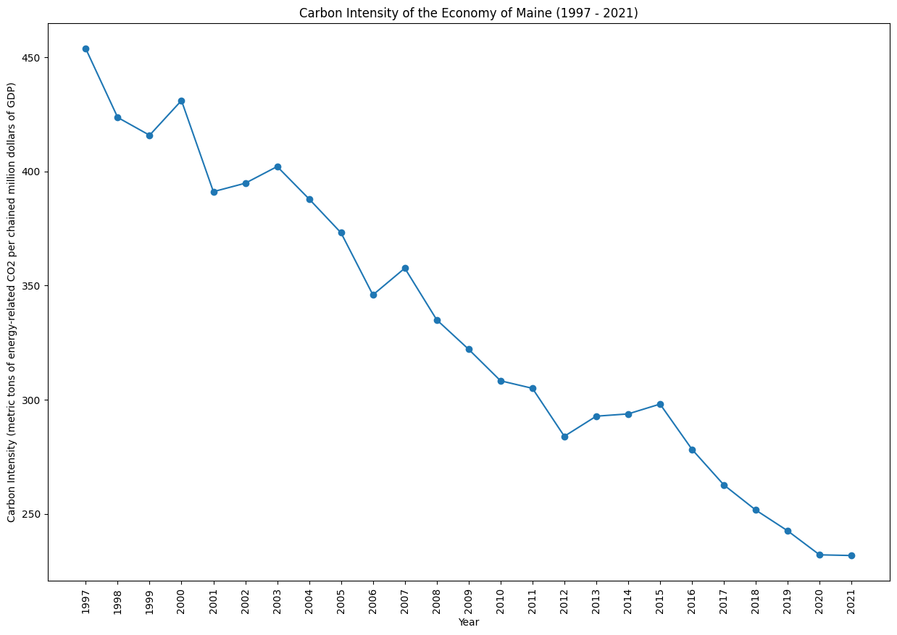
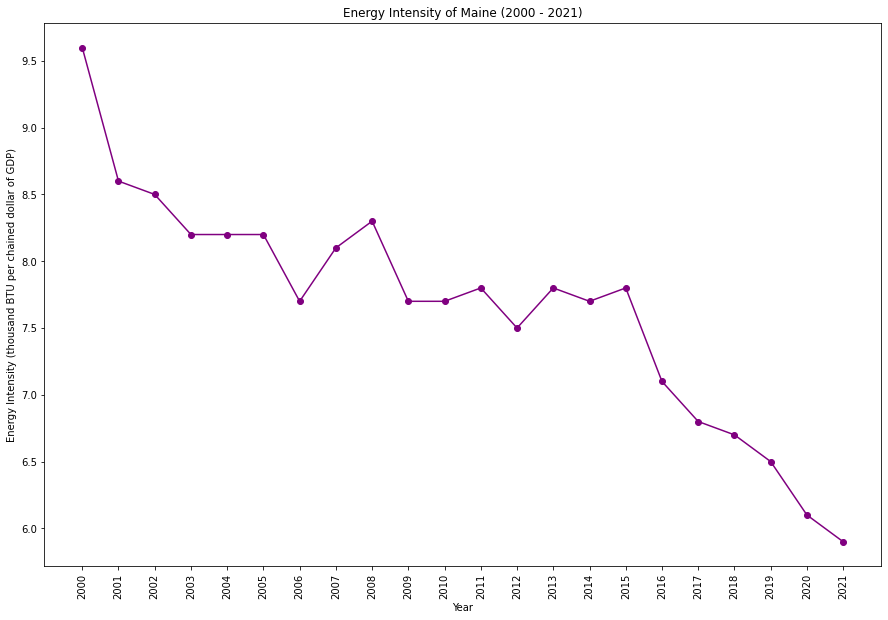

|  |  |
|  |  |
Maine is actively engaged in promoting renewable energy, including wind and tidal power. The state has set ambitious goals for reducing carbon emissions and increasing energy efficiency. Coastal resilience is a significant concern for Maine, and efforts are underway to address the impacts of sea-level rise.